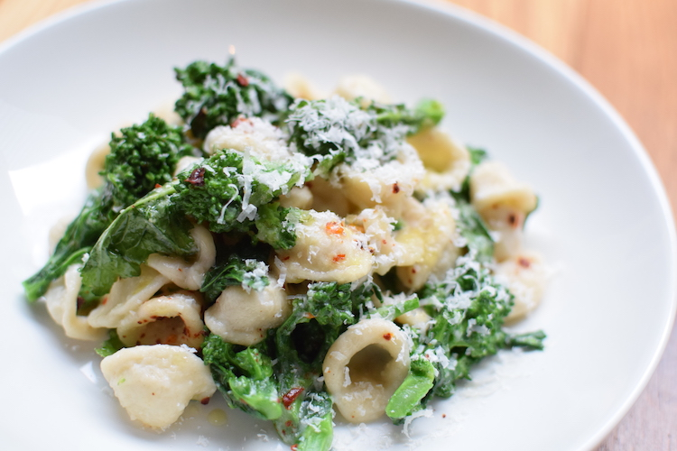

Orechiette with Sausage and Broccoli Rabe

Description
Orechiette with sausage and broccoli rabe is a classic Italian dishthat is simple to prepare and sure to please.
As is the case with most Italian food, the recipe is simple and relies on quality ingredients to create a dish that is deep in flavor and highly filling.
ingredients
- 500g orechiette
- 300g freshly grated Pecorino Romano
- One bunch fresh broccoli rabe, stems trimmed
- 500g fresh Italian sausage
- Pinch of red pepper flakes
- Salt and pepper to taste
Steps
- Fill a pot with ample water and put on high heat to boil.
- Chop up the sausage into bite sized pieces.
- Heat up olive oil in a pan over medium heat.
- When the oil is hot, sprinkle a pinch of red pepper flakes into the hot oil. Let simmer for 20 seconds.
- Once the pepper flakes have released their flavor into the oil, put the sausage in the pan and cook until it is lightly browned.
- When the water comes to a boil, dump the brocoli rabe in the water and blanche for 30 seconds. Set aside and let cool on a cutting board.
- Liberally salt the water and return to a roiling boil.
- Dump the pasta in the boiling water and cook until al dente.
- While the pasta is cooking, chop up the broccoli rabe and toss with the sausage in the hot pan.
- Once the pasta is almost cooked, set aside 1 cup of pasta water and drain the past in a colander.
- Transfer the pasta to the hot pan with the sausage and broccoli rabe. Pour in half of the pasta water and stir the contents of the pan.
- Let the pasta finish cooking in the pan. The starchy pasta water should give the whole dish a creamy texture. Use more pasta water if so desired.
- Transfer contents of pan to a serving bowl. Serve immediately with ample grated Pecorino.